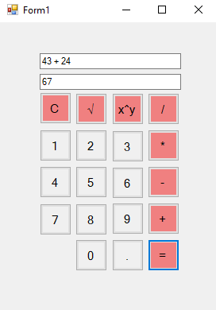
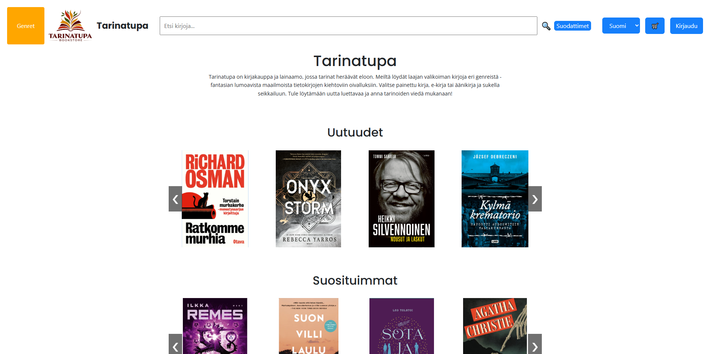
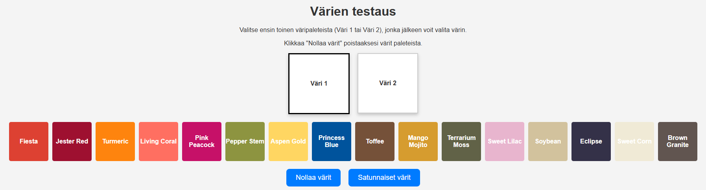
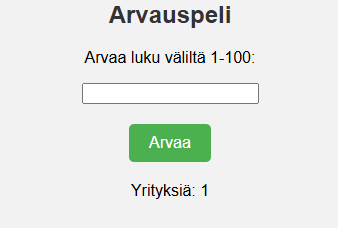
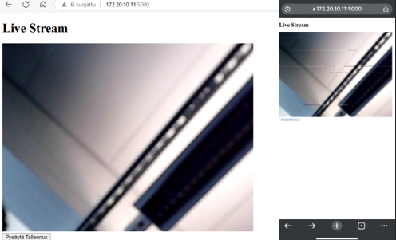

Projektini
C#
Ristinollapeli
Rakensin Windows Forms Apilla ristinollapelin, jossa kaksi pelaajaa voivat pelata yhdellä laitteella ristinollaa. Ohjelma tarkistaa pelin tilanteen jokaisen siirron jälkeen ja tunnistaa automaattisesti voiton tai tasapelin.
 GitHub
GitHub
Laskin
Tein Windows Forms Apilla laskimen, joka osaa suorittaa peruslaskutoimistusten lisäksi myös neliöjuuren ja potenssilaskut. Laskin osaa käsitellä desimaalilukuja sekä negatiivisia lukuja.

HTML + CSS
Tarinatupa
Tässä kouluprojektissa rakensimme kuvitteellisille yrityksille nettisivuja. Tarinatupa on kirjakauppa ja lainaamo, jonka nettisivuilla voi etsiä sekä ostaa tai lainata kirjoja. Sivustolla on myös tehokas hakutoiminto ja suodattimet. Enimmäkseen projektissa käytettiin HTML:ää, CSS:ää ja JavaScriptiä.

Kotkantien Maalaus ja Tapetointi
Kotkantien Maalaus ja Tapetointi on kuvitteellinen yritys, jonka nettisivuilla mainostetaan heidän palveluitaan. Sivustolta löytyy tietoa yrityksestä, galleria sekä värien testausosio, jossa käyttäjä voi kokeilla erilaisia väriyhdistelmiä. Projektissa käytin HTML:ää, CSS:ää ja JavaScriptiä.

 GitHub
JavaScript
Äänen visualisoija
JavaScript-sivu, johon käyttäjä voi liittää lähes minkä tahansa äänitiedoston, jonka sovellus visualisoi taajuuspalkeilla reaaliajassa.
 GitHub
GitHub
Arvauspeli
Yksinkertainen arvauspeli, jossa käyttäjän tulee arvata satunnasesti valittu luku väliltä 1-100. Peli laskee yritysten määrän sekä ajan, kuinka kauan luvun arvaamisessa kesti. Jokaisen arvauksen jälkeen peli antaa vihjeen, onko oikea luku suurempi vai pienempi.

IoT & Robotiikka
Valvontajärjestelmä
Tässä projektissa rakensin valvontajärjestelmän Raspberry Pi:lle käyttäen hyödyksi PIR-anturia sekä kameraa. Kun PIR-anturi havaitsee liikettä, ohjelma aloittaa automaattisesti videon tallennuksen. Ohjelmassa on web-käyttöliittymä, josta käyttäjä voi seurata kameraa reaaliajassa. Webissä on myös nappi, jota painamalla käyttäjä voi keskeyttää tallennuksen. Videon tallennus on ajastettu päättymään itsestään puolen tunnin kuluttua, mikäli käyttäjä ei ole paikalla. Videotallenteet tallentuvat Raspberry Pi:lle. Projektissa käytin Pythonia sekä Flaskia web-käyttöliittymään.


Muut
Energianhallintapaneeli
Tämä React + Vite-sovellus kertoo nykyisen pörssisähkön hinnan sekä piirtää käyrää sähkön hinnasta vuorokauden aikana. Sovellus myös näyttää sään ja antaa käyttäjälle ehdotuksia, milloin olisi edullisinta käyttää sähköä hinnan vaihtelun mukaan. Esimerkkisovellus käyttää pörssisähkössä mock-dataa, mutta sen voi helposti yhdistää oikeaan API:iin.
 GitHub
GitHub